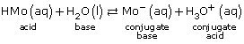
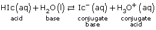
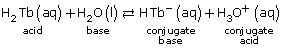
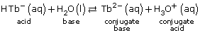

Module 8—Acid-Base Equilibrium
 Explore
Explore
One of the summaries you started back in Lesson 1 focused on titration and titration curves. Can you list the equipment required to perform a titration? What is an indicator used for?
Retrieve the summary you prepared earlier and consider how your knowledge of chemical equilibrium and the equilibrium of acids and bases fits into what you know about titration curves and the process of titration.
 Read
Read
Read pages 751–752 in the textbook to learn how equilibrium concepts contribute to the unique shape of a titration curve. You may wish to add this new information on titration and titration curves to the summaries you initiated in Lesson 1.
Read pages 753–754 in the textbook to identify how indicators and the colour changes you used to detect the endpoint of a titration are part of an equilibrium system. As you read this section, consider how the dramatic change in the pH that occurs near the equivalence point of a titration becomes the stress that influences a shift in the equilibrium of the indicator system. This stress eventually leads to the predominance of the other form of the indicator molecule and its characteristic colour.
 Self-Check
Self-Check
SC 1. Complete “Practice” questions 1 and 2 on pages 754–755 of the textbook.
Self-Check Answers
Contact your teacher if your answers vary significantly from the answers provided here.
SC 1.
Practice 1.
- The slope of the buffering region is relatively flat (slope = nearly 0).
- The buffering region is where the concentration of the reactant in the test solution is reducing as a result of being converted chemically due to the addition of titrant.
- Near the equivalence point, a rapid change in pH occurs; therefore, the slope of the graph is very large.
- Nearing the equivalence point, the chemical amount of titrant added is almost equal to the chemical amount of reactant in the test solution. The dramatic change in pH witnessed is a direct result of the chemical conversion of the reactant in the test solution and its decreased influence on the properties of the solution. Past the equivalence point, titrant is in excess and the pH change is due to the accumulation of titrant and its influence on the properties of the resulting solution.
Practice 2.

-

-


-